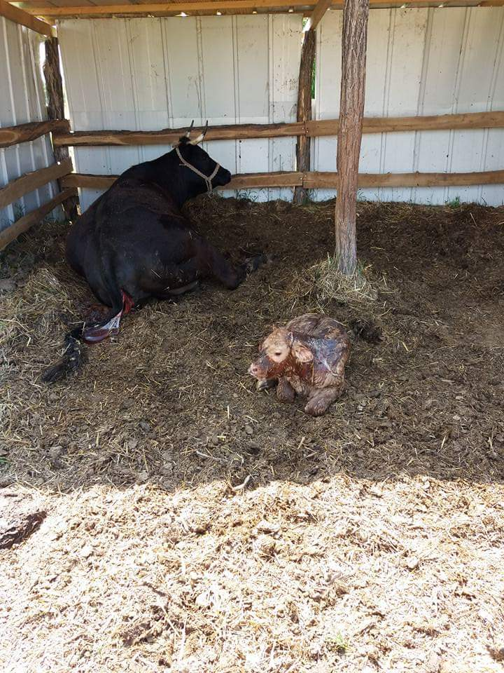
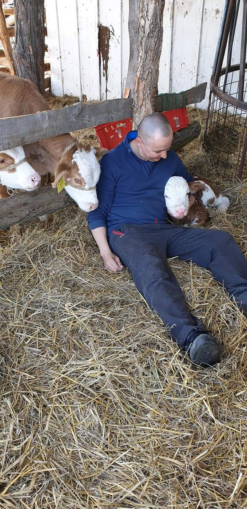

Ellés történt!
A tenyészet magyartarka közelellős tehenekkel bővült!


2018.02.21
A tenyészet magyartarka közelellős tehenekkel bővült!
2018.02.21
Sikeresen megnyitottam a telephelyem, melyen magyartarka fajta tenyésztése kezdődik. Az állományt saját szaporításból tervezem bővíteni, illetve terveim között szerepel egy kis húsfedolgozó üzem nyitása, működtetése is.
2016.03.17